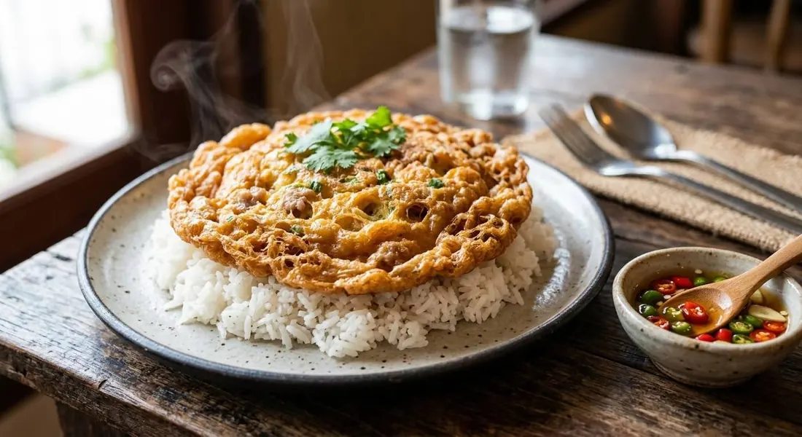

ไข่เจียว means "fried egg" — but not the folded French kind. Whisked to a froth, fried in oil deep enough to puff, crisp at the rim and soft in the middle, over rice with chilli fish sauce.

Every Thai kid learns ไข่เจียว before anything else — it's the first dish, the fallback, the thing you eat with rice when there's nothing else to eat with rice. And its standard is not gentle: the omelette should arrive puffed and golden, the rim crisp and lacy, the middle still soft, sitting on a plate of hot jasmine rice. A flat, soft-curd omelette isn't khai jiao — it's a missed opportunity.
Two things earn the puff. One: the eggs are whisked with a fork — Thai cooks are specific about this, the fork's gaps beat in more air than a spoon — until genuinely frothy. Two: the oil is hot and plentiful, so the froth sets the instant it lands instead of soaking. Restaurant cooks pour the egg in as a thin spiral from height, trapping still more air, then crank the heat at the end to push the oil back out.
And the second half of the dish isn't on the plate — it's น้ำปลาพริก, prik nam pla: fish sauce, sliced chillies and lime, spooned over at the table. The omelette is the canvas; the chilli fish sauce is the flavour. It's the same condiment that finishes khao pad — the Thai kitchen's answer to salt and pepper.
| Thai | English | Amount |
|---|---|---|
| ไข่ไก่ | Eggs | 4 |
| หมูสับ (ลวกสุก) | Minced pork, blanched — the sources split, see below | ½ cup |
| น้ำปลา | Fish sauce — or 1 tbsp white soy + 1 tbsp oyster sauce | ½ tbsp |
| น้ำมัน | Neutral oil, for frying | 200 ml |
| The prik nam pla (น้ำปลาพริก) | ||
| น้ำปลา | Fish sauce | 2 tbsp |
| พริกขี้หนู (ซอย) | Thai chillies, sliced | 3–5 |
| มะนาว | Lime wedge | 1 |
| ข้าวสวย | Jasmine rice, to serve | as liked |
Raw or blanched pork. Kapook blanches the minced pork first, so the middle of the omelette is never raw; the Wongnai version mixes it in raw. For a thick omelette, the blanch is the safer play.
The seasoning. Fish sauce alone (Kapook) against white soy plus oyster sauce plus seasoning powder (Wongnai). Both are published; the fish-sauce version tastes cleaner, the soy version rounder.
How much oil. Kapook commits to 200 ml — a shallow deep-fry, effectively; Wongnai pan-fries in four tablespoons. The deep version puffs dramatically; the shallow one is tamer. The recipe above keeps the oil and the fork, and lets you choose the courage.
Egg count. Four to six for two people, depending on appetite. Thai omelettes are generous by design.
Add-ins. Minced pork is the standard, but Thai cooks happily swap in prawns, crab, or nothing — and fold in spring onion, holy basil or Thai basil instead. The technique stays identical.
This recipe is translated from the following Thai-language sources. Where they disagree, we've said so.
1. Kapook — "ไข่เจียวหมูสับ เมนูไข่ฟูกรอบนุ่ม ไม่อมน้ำมันไม่ติดกระทะ" (the hot-oil deep-fry method with blanched pork) — cooking.kapook.com
2. Wongnai (tata) — "สูตร ไข่เจียวหมูสับ พร้อมวิธีทำ" (the soy-oyster seasoning version) — wongnai.com
3. aroifin — "วิธีทำ ไข่เจียวหมูสับ ให้ฟูกรอบ เมนูง่าย ๆ ที่ใครกินก็ติดใจ" (the spiral pour, the fork, and the end-of-fry heat trick) — aroifin.com